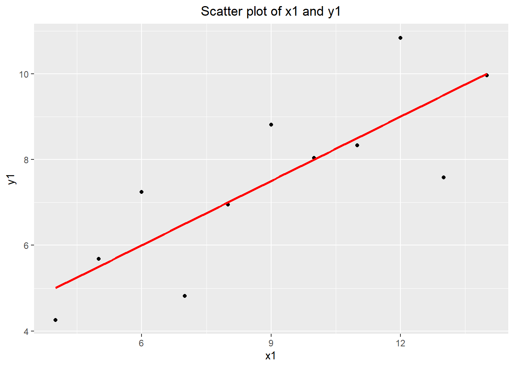
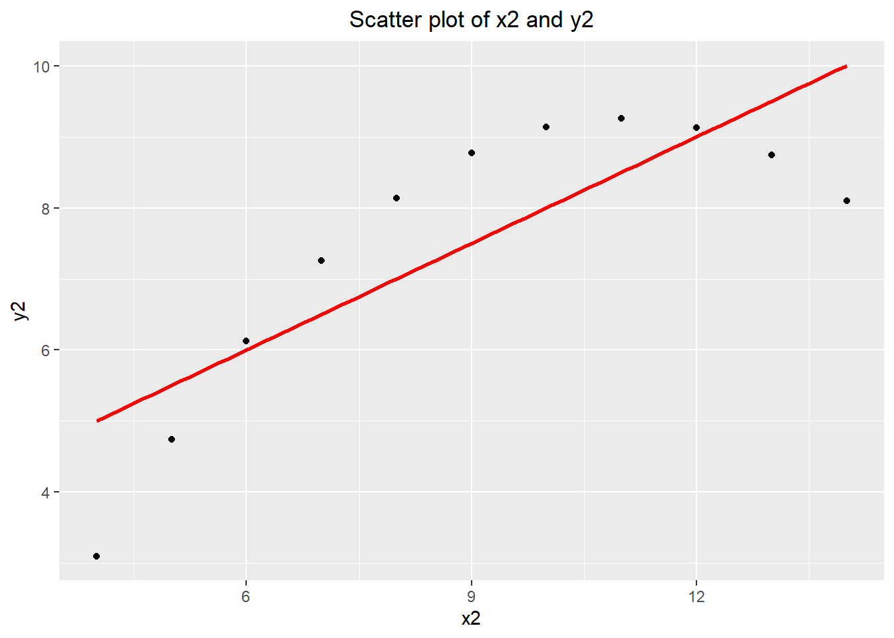
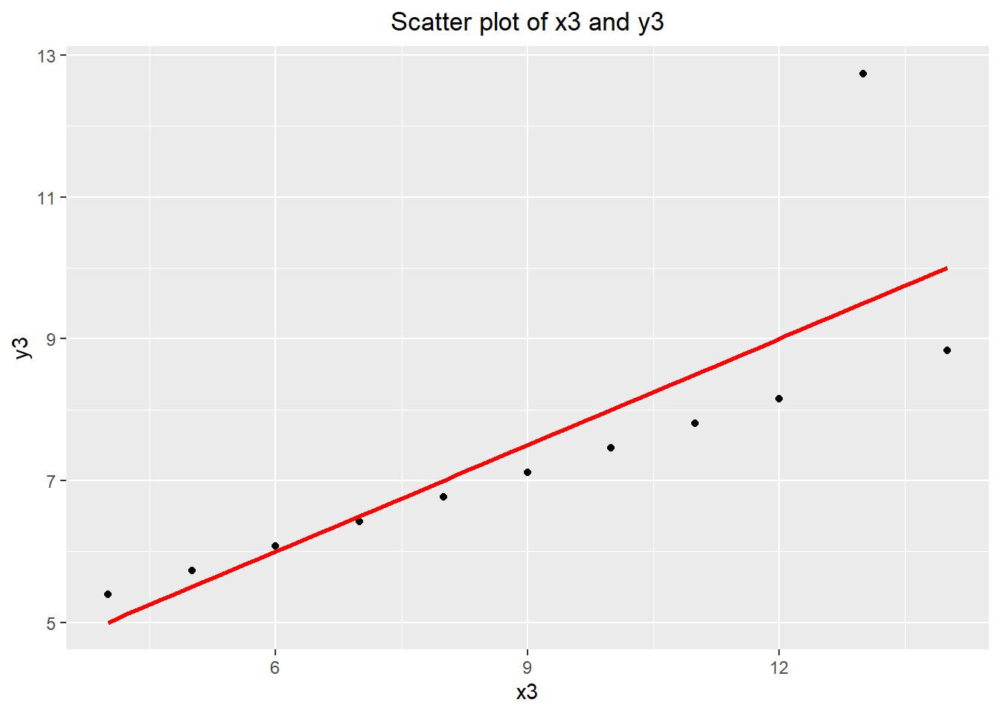
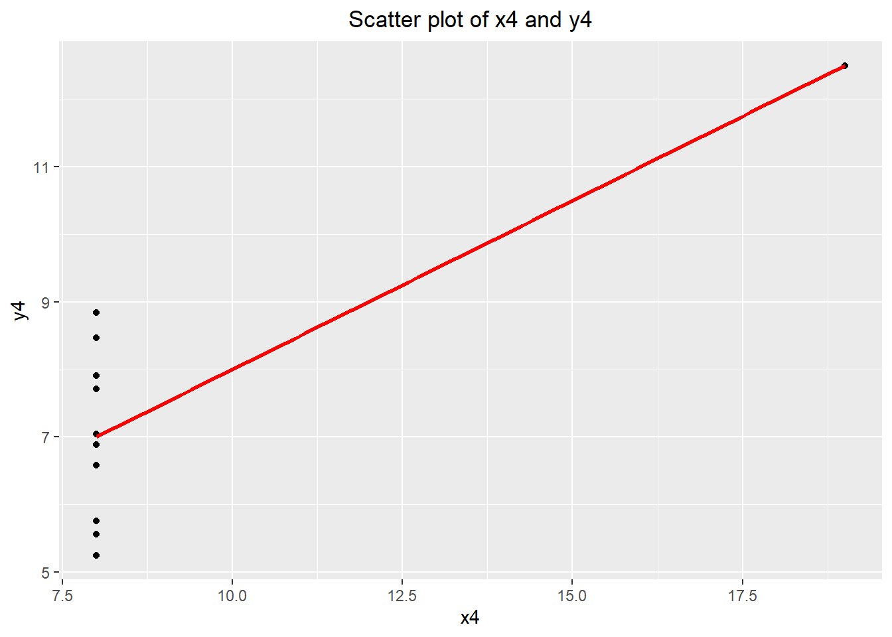
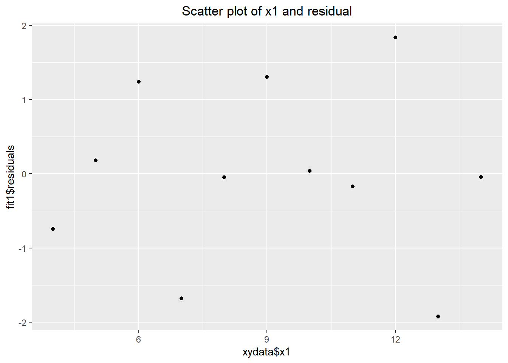
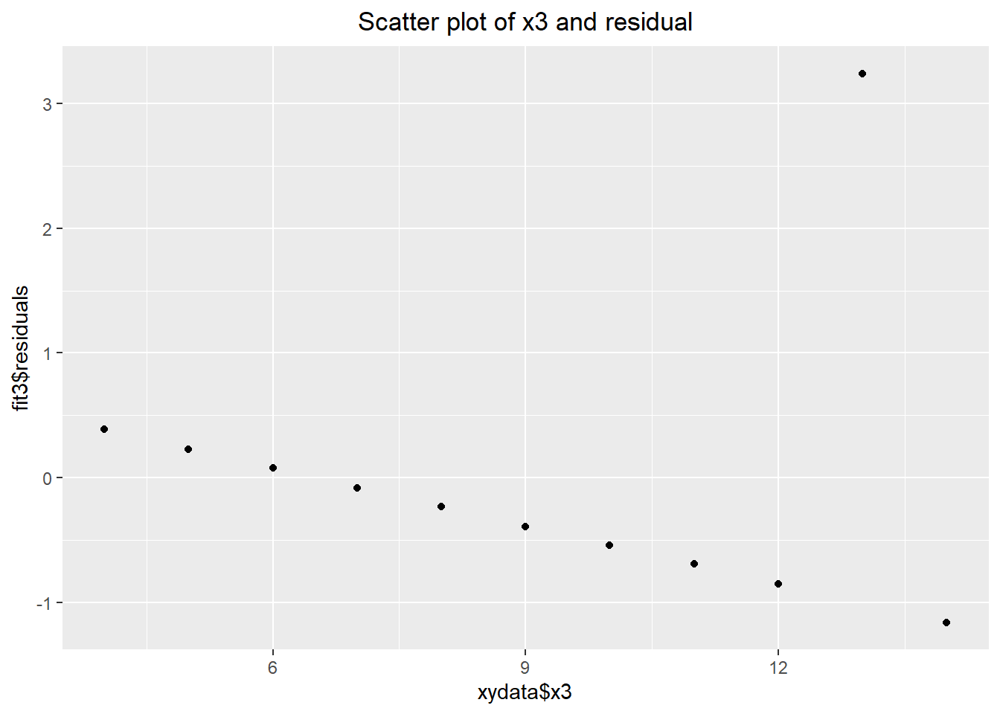
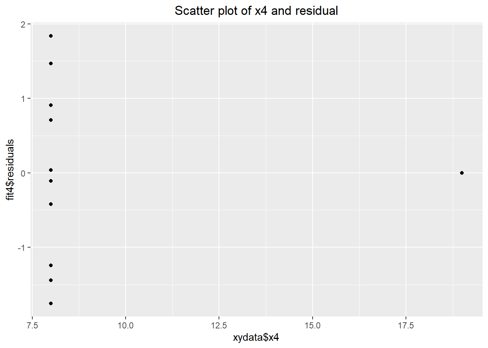

# correlation between x1 and y1
cor(xydata$x1, xydata$y1)[1] 0.8164205If you find any typos or errors, please feel free to contact me via email at r13323002@ntu.edu.tw. I would appreciate it and will correct the solution to prevent any misunderstandings.
For some R commands marked with ‘OPTIONAL,’ you don’t need to learn them. You will be completely fine on the computer quiz even if you choose to ignore them.
If you’re having trouble understanding the code, don’t hesitate to ask me for help. I’ll do my best to assist you during office hours or after the TA session.
# clear the mamory and import package
rm(list = ls())
library(tidyverse)
xydata <- read.csv("data/xydata.csv")# correlation between x1 and y1
cor(xydata$x1, xydata$y1)[1] 0.8164205# correlation between x2 and y2
cor(xydata$x2, xydata$y2)[1] 0.8162365# correlation between x3 and y3
cor(xydata$x3, xydata$y3)[1] 0.8162867# correlation between x4 and y4
cor(xydata$x4, xydata$y4)[1] 0.8165214fit1 <- lm(xydata$y1 ~ xydata$x1)
summary(fit1)
Call:
lm(formula = xydata$y1 ~ xydata$x1)
Residuals:
Min 1Q Median 3Q Max
-1.92127 -0.45577 -0.04136 0.70941 1.83882
Coefficients:
Estimate Std. Error t value Pr(>|t|)
(Intercept) 3.0001 1.1247 2.667 0.02573 *
xydata$x1 0.5001 0.1179 4.241 0.00217 **
---
Signif. codes: 0 '***' 0.001 '**' 0.01 '*' 0.05 '.' 0.1 ' ' 1
Residual standard error: 1.237 on 9 degrees of freedom
Multiple R-squared: 0.6665, Adjusted R-squared: 0.6295
F-statistic: 17.99 on 1 and 9 DF, p-value: 0.00217fit2 <- lm(xydata$y2 ~ xydata$x2)
summary(fit2)
Call:
lm(formula = xydata$y2 ~ xydata$x2)
Residuals:
Min 1Q Median 3Q Max
-1.9009 -0.7609 0.1291 0.9491 1.2691
Coefficients:
Estimate Std. Error t value Pr(>|t|)
(Intercept) 3.001 1.125 2.667 0.02576 *
xydata$x2 0.500 0.118 4.239 0.00218 **
---
Signif. codes: 0 '***' 0.001 '**' 0.01 '*' 0.05 '.' 0.1 ' ' 1
Residual standard error: 1.237 on 9 degrees of freedom
Multiple R-squared: 0.6662, Adjusted R-squared: 0.6292
F-statistic: 17.97 on 1 and 9 DF, p-value: 0.002179fit3 <- lm(xydata$y3 ~ xydata$x3)
summary(fit3)
Call:
lm(formula = xydata$y3 ~ xydata$x3)
Residuals:
Min 1Q Median 3Q Max
-1.1586 -0.6146 -0.2303 0.1540 3.2411
Coefficients:
Estimate Std. Error t value Pr(>|t|)
(Intercept) 3.0025 1.1245 2.670 0.02562 *
xydata$x3 0.4997 0.1179 4.239 0.00218 **
---
Signif. codes: 0 '***' 0.001 '**' 0.01 '*' 0.05 '.' 0.1 ' ' 1
Residual standard error: 1.236 on 9 degrees of freedom
Multiple R-squared: 0.6663, Adjusted R-squared: 0.6292
F-statistic: 17.97 on 1 and 9 DF, p-value: 0.002176fit4 <- lm(xydata$y4 ~ xydata$x4)
summary(fit4)
Call:
lm(formula = xydata$y4 ~ xydata$x4)
Residuals:
Min 1Q Median 3Q Max
-1.751 -0.831 0.000 0.809 1.839
Coefficients:
Estimate Std. Error t value Pr(>|t|)
(Intercept) 3.0017 1.1239 2.671 0.02559 *
xydata$x4 0.4999 0.1178 4.243 0.00216 **
---
Signif. codes: 0 '***' 0.001 '**' 0.01 '*' 0.05 '.' 0.1 ' ' 1
Residual standard error: 1.236 on 9 degrees of freedom
Multiple R-squared: 0.6667, Adjusted R-squared: 0.6297
F-statistic: 18 on 1 and 9 DF, p-value: 0.002165ggplot(xydata, aes(x = x1, y = y1)) +
geom_point() +
geom_smooth(method = "lm", se = FALSE, col = "red") +
labs(title = "Scatter plot of x1 and y1") +
theme(plot.title = element_text(hjust = 0.5))
ggplot(xydata, aes(x = x2, y = y2)) +
geom_point() +
geom_smooth(method = "lm", se = FALSE, col = "red") +
labs(title = "Scatter plot of x2 and y2") +
theme(plot.title = element_text(hjust = 0.5))
ggplot(xydata, aes(x = x3, y = y3)) +
geom_point() +
geom_smooth(method = "lm", se = FALSE, col = "red") +
labs(title = "Scatter plot of x3 and y3") +
theme(plot.title = element_text(hjust = 0.5))
ggplot(xydata, aes(x = x4, y = y4)) +
geom_point() +
geom_smooth(method = "lm", se = FALSE, col = "red") +
labs(title = "Scatter plot of x4 and y4") +
theme(plot.title = element_text(hjust = 0.5))
ggplot() +
geom_point(mapping = aes(x = xydata$x1, y = fit1$residuals)) +
labs(title = "Scatter plot of x1 and residual") +
theme(plot.title = element_text(hjust = 0.5))
ggplot() +
geom_point(mapping = aes(x = xydata$x2, y = fit2$residuals)) +
labs(title = "Scatter plot of x2 and residual") +
theme(plot.title = element_text(hjust = 0.5))ggplot() +
geom_point(mapping = aes(x = xydata$x3, y = fit3$residuals)) +
labs(title = "Scatter plot of x3 and residual") +
theme(plot.title = element_text(hjust = 0.5))
ggplot() +
geom_point(mapping = aes(x = xydata$x4, y = fit4$residuals)) +
labs(title = "Scatter plot of x4 and residual") +
theme(plot.title = element_text(hjust = 0.5))
From the scatter plot for each pair of data, we can notice that pairs \((x_1,y_1)\) and \((x_3,y_3)\) basically follows the linear trend despite an outlier in pair \((x_3,y_3)\). The linear model with higer-order polynomial term will be more appropriate for pair \((x_2,y_4)\); while pair \((x_4,y_4)\) doesn’t suit linear estimation.
There is a fan shape in the residual plot. Variability around the regression line increases as \(x\) increases. Since there is a trend in the residual plot, the linear model method we have described would not be appropriate for these data.
There is an apparent curvature in the residual plot. A linear model would not be appropriate for these data.
The relationship is strong and positive. However, there appears to be some departure from linearity as the scatterplot shows somewhat of a fan shape. There is less variability in weights for people with lower hip girth measurements than for people with larger hip girth measurements. One explanation for the fan shape might be that the data are composed of two groups of people (males and females) who are likely to have a different relationship between their weights and hip girths.
Changing the units, even if just for one of the variables, will not change the form, direction or strength of the relationship between the two variables.
There is a positive, moderate, linear association between number of calories and amount of carbohydrates. In addition, the amount of carbohydrates is more variable for menu items with higher calories, indicating non-constant variance. There also appear to be two clusters of data: a patch of about a dozen observations in the lower left and a larger patch on the right side.
Explanatory: number of calories. Response: amount of carbohydrates (in grams).
With a regression line, we can predict the amount of carbohydrates for a given number of calories. This may be useful if only calorie counts for the food items are posted but the amount of carbohydrates in each food item is not readily available.
Even though the relationship appears linear in the scatterplot, the constant variability assumption is violated. We should not fit a least squares line to these data.
\[ \widehat{\text{headrwt}}=-0.357+4.034\times\text{body\_weight} \]
Explanatory: number of calories. Response: amount of carbohydrates (in grams).
With a regression line, we can predict the amount of carbohydrates for a given number of calories. This may be useful if only calorie counts for the food items are posted but the amount of carbohydrates in each food item is not readily available.
Even though the relationship appears linear in the scatterplot, the constant variability assumption is violated. We should not fit a least squares line to these data.
\(\sqrt{0.6466}=0.8041\).
The relationship appears to be strong, positive, and linear. There is one potential outlier: the student who had 9 cans of beer.
\[ \widehat{\text{BAC}}=-0.0127+0.0180\times\text{beers} \] Slope: For each additional can of beer consumed, the model predicts an additional 0.0180 grams per deciliter BAC.
Intercept: Students who don’t have any beer are expected to have a blood alcohol content of -0.0127.
The hypotheses are as follows: \[ \begin{cases} H_0: \text{The true slope coefficient of number of beers is zero. } (\beta_1=0)\\ H_A: \text{The true slope coefficient of number of beers is different than zero. } (\beta_1\neq 0) \end{cases} \] The p-value is approximately 0. (Note that this output doesn’t mean the p-value is exactly zero, only that when rounded to four decimal places it is zero.) With such a small p-value and since the data showed a positive relationship, we reject \(H_0\) and conclude that the data provide convincing evidence that number of cans of beer consumed and blood alcohol content are positively correlated and the true slope parameter is greater than 0.
\(R^2=0.892=0.79\). Approximately 79% of the variability in blood alcohol content can be explained by number of cans of beer consumed.
It would probably be weaker. This study had people of very similar ages, and they also had identical drinks. In bars and elsewhere, drinks vary widely in the amount of alcohol they contain.
Since \(R^2 = r^2 = 0.72\) and the scatterplot shows a negative trend, \[ r = -\sqrt{0.72} \approx -0.85. \]
Slope: \[ b_1 = r \frac{s_y}{s_x} \;=\; (-0.8485)\frac{16.9}{26.7} \approx -0.536. \] Intercept: \[ b_0 = \bar y - b_1 \bar x \;=\; 38.8 - (-0.536)(30.8) \approx 55.3. \] Thus the fitted line is \[ \hat y = 55.3 - 0.536\,x. \]
For a neighborhood with 0% reduced-fee lunches (\(x=0\)), the model predicts about 55.3% of bike riders wear helmets.
For each 1 percentage-point increase in the reduced-fee lunch rate, the predicted helmet-wearing rate decreases by about 0.536 percentage points.
Predicted: \[ \hat y = 55.3 - 0.536(40) \approx 33.9. \] Residual: \[ e = y - \hat y = 40 - 33.9 \approx 6.1. \] Interpretation: This neighborhood’s helmet-wearing rate is about 6.1 percentage points higher than the model predicts given its reduced-fee lunch rate.
Because the point \((\bar x,\bar y)\) lies on the least-squares line, \[ \bar y=\hat\beta_0+\hat\beta_1\bar x \;\Rightarrow\; \hat\beta_1=\frac{\bar y-\hat\beta_0}{\bar x} =\frac{3.9983-4.010}{-0.0883} \approx 0.133. \] So the fitted model is \[ \widehat{\text{eval}} = 4.010 + 0.133\,(\text{beauty}). \]
The regression output reports \(t=4.13\) with \(p<0.0001\) for the beauty coefficient. Since the \(p\)-value is far below 0.05, we have convincing evidence that the slope is positive: higher (standardized) beauty scores are associated with higher teaching evaluations.
Given these diagnostics, the simple linear regression assumptions are satisfied.